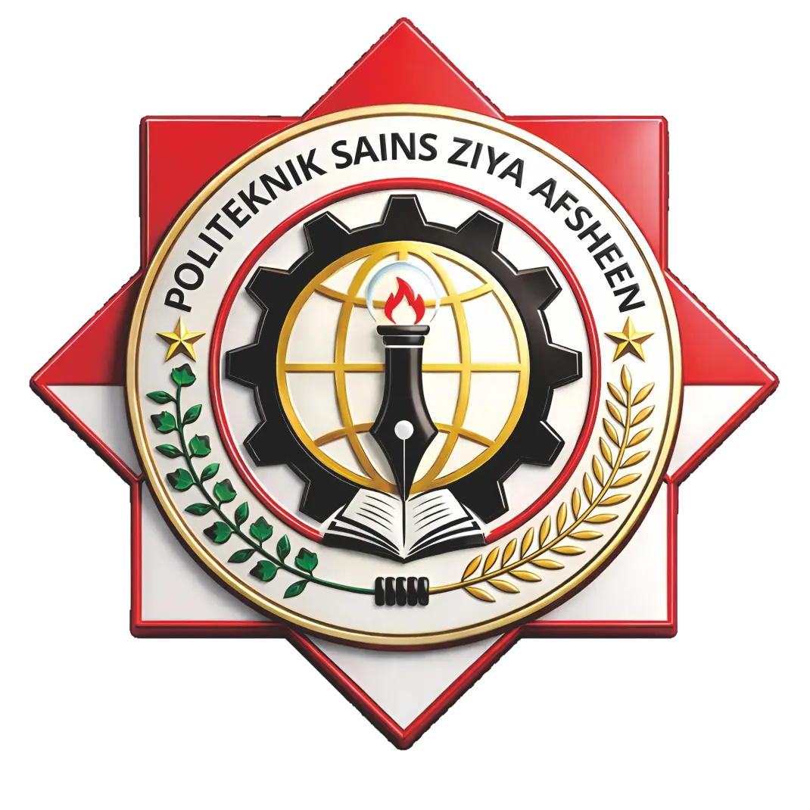
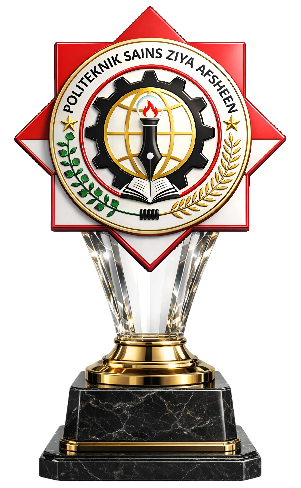
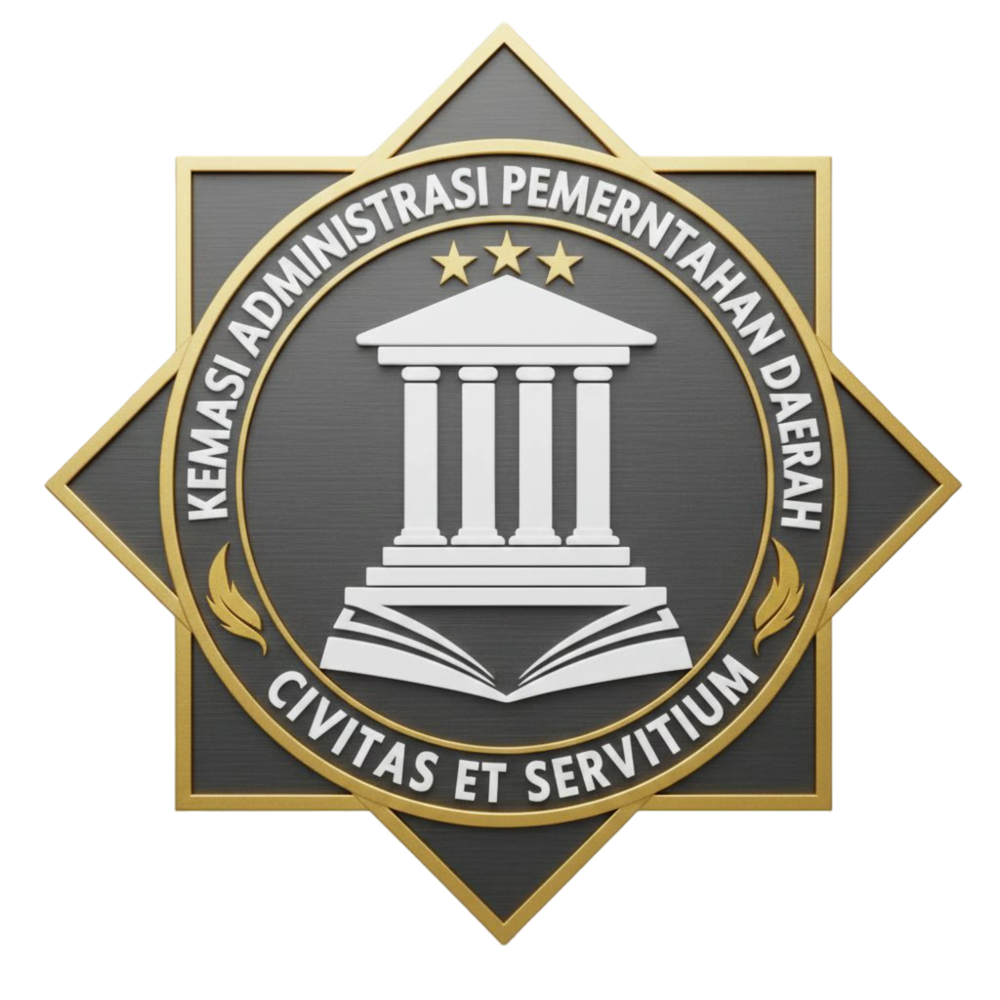
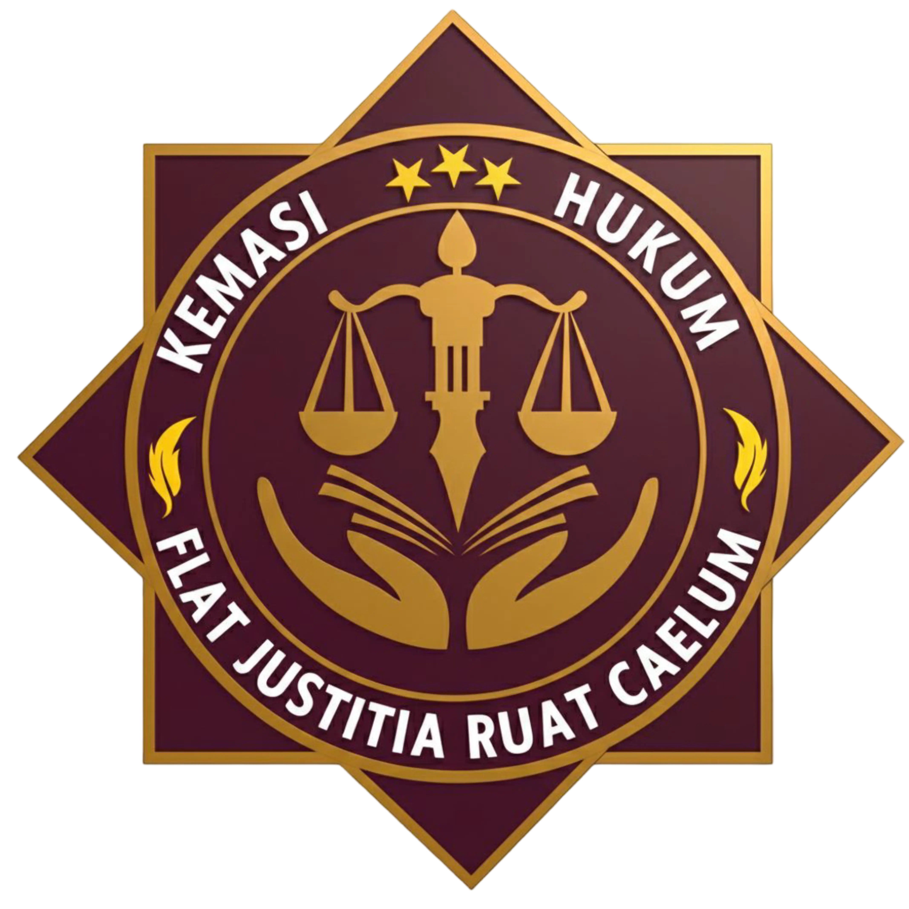
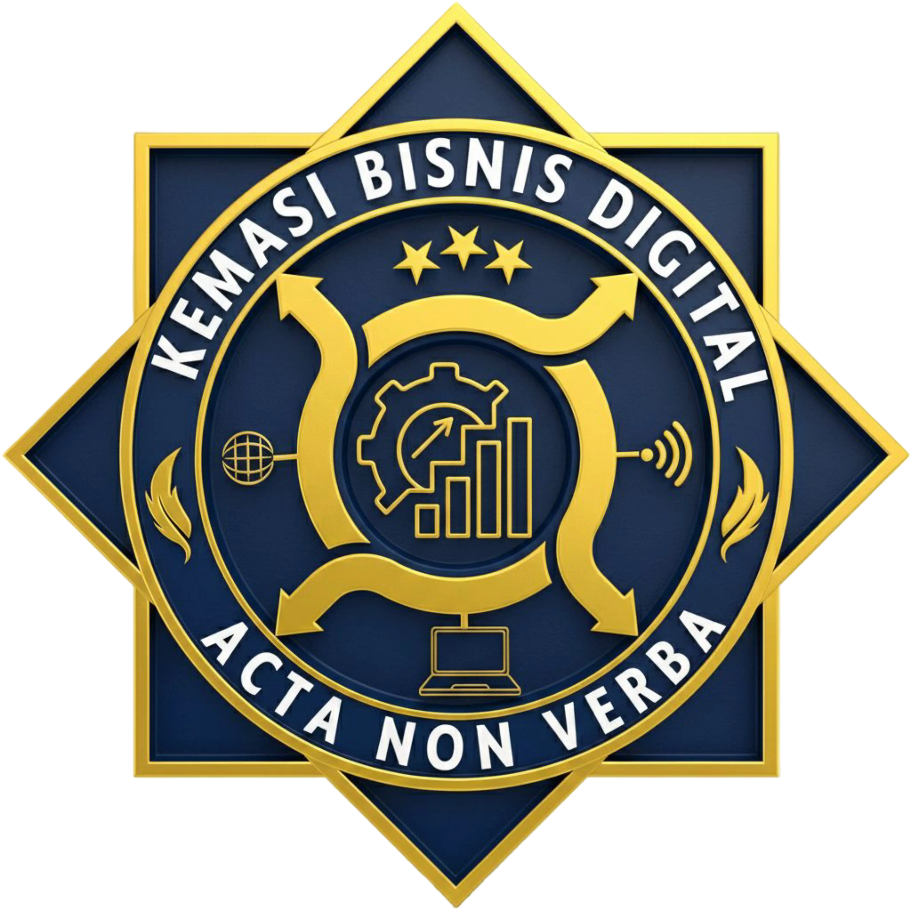
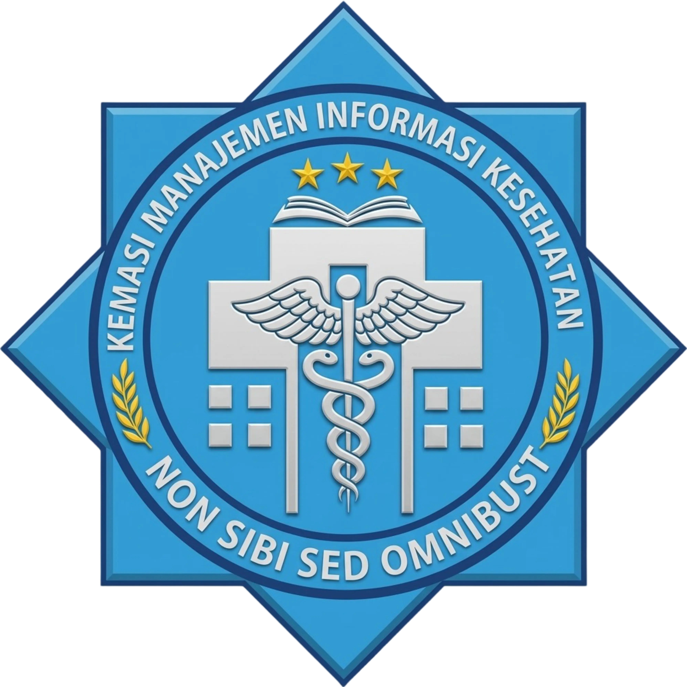

POLITEKNIK SAINS ZIYA AFSHEENBergabunglah dengan Politeknik Sains Ziya Afsheen untuk pendidikan vokasi berkualitas, terjangkau, dan fleksibel.

Politeknik Sains Ziya Afsheen merupakan perguruan tinggi vokasi yang menyelenggarakan pendidikan setara D4 / S.Tr (Sarjana Terapan) dengan fokus pada pengembangan keterampilan praktis dan kompetensi profesional yang siap diterapkan di dunia kerja, dengan biaya yang cukup affordable yakni 100k perbulan.
Kami memiliki metode optional yang membuka peluang kerja sama wirausaha dan bisnis bagi para calon mahasiswa/i politeknik sains ziya afsheen yang memiliki skill khusus maupun memiliki asset / lahan yang bisa diberdayakan.
Perkuliahan diselenggarakan dengan sistem hybrid, sehingga mahasiswa dapat mengikuti proses belajar secara jarak jauh (online) maupun hadir langsung di lokasi kampus, memberikan fleksibilitas bagi mahasiswa yang memiliki keterbatasan waktu atau lokasi.

D4

D4

D4

D4
"Sebagai Lembaga Pendidikan Vokasi yang ‘High Class’ dan Menjadikan Politeknik yang Unggul dan Berdaya Saing"